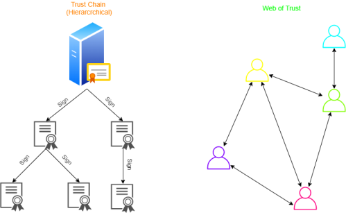

Web of Trust
Web of Trust model
“
Web of Trust
” is a
decentralized model
that is an alternative to the centralized model “
Trust Chain
”(hierarchical) used for example by SSL, which relies exclusively on a certificate authority
